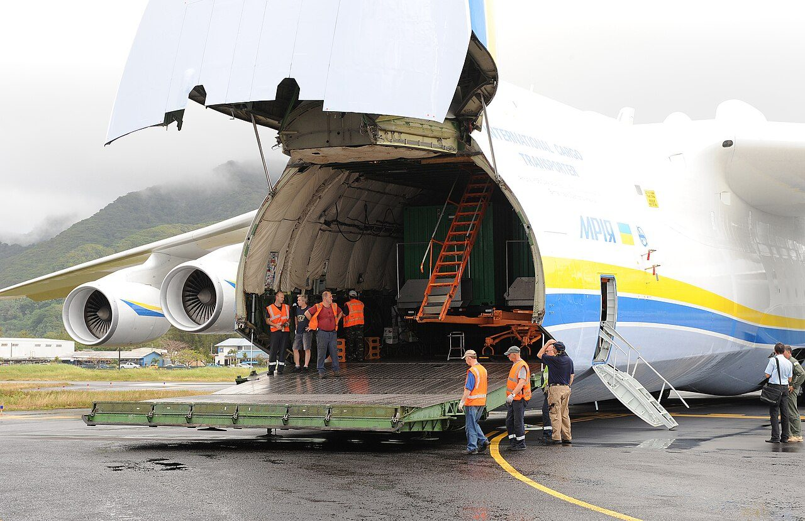
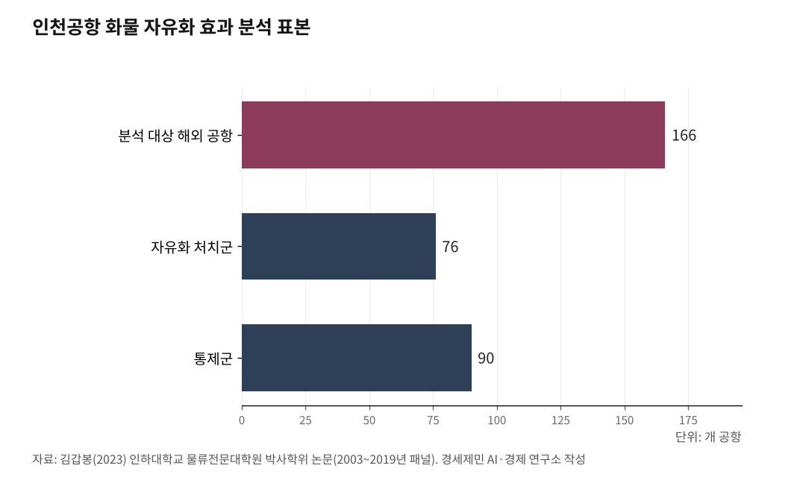

[세계3위 인천공항미래⑪] 항공자유화가 화물을 늘린다, 실증된 지렛대다
운수권 빗장을 풀면 노선과 빈도가 열린다, 그 인과를 데이터가 보여준다
166개 공항 17년 패널 분석, 자유화는 인천 화물 수송에 정방향 효과를 냈다
인하대 해양AI융합센터 김갑봉 연구교수
앞선 글에서 항공자유화로 운수권을 풀면 노선과 빈도가 열린다고 했다. 말이 아니라 데이터로 따져볼 일이다. 박사학위 논문은 항공자유화협정(OSA, Open Skies Agreement)이 인천 화물 수송을 실제로 늘렸는지 실증했다. 답은 그렇다였다.

1. 항공자유화와 운수권
국가 사이 하늘길은 운수권으로 묶인다. 어느 나라 항공사가 어느 노선에 몇 편을 띄울지 정부가 협정으로 정한다. 항공자유화협정은 그 빗장을 푸는 협정이다. 운수권 제약 없이 자유롭게 취항하고 증편한다. 노선이 열리고 빈도가 늘면 그 길로 화물과 여객이 흐른다.

2. 한국의 자유화는 단계로 넓어졌다
한국은 자유화를 단계로 넓혔다. 1998년 한-미 자유화로 문을 열었다. 2006년 한-중 자유화는 산동과 해남에 한정해 시작했다. 2007년 한-일 자유화가 더해졌다. 2019년에는 싱가포르와 브루나이로 넓혔다.
화물 분야만 보면 자유화를 맺은 상대 공항이 76개에 이른다. 협정 시점은 나라마다 다르다. 2005년부터 2018년까지 흩어져 있다.
3. 자유화가 화물을 늘렸다, 실증 결과
효과는 실증으로 확인됐다. 박사학위 논문은 166개 해외 공항의 2003년부터 2019년까지 화물 수송량과 빈도수를 패널데이터로 모으고, 인구와 국내총생산(GDP), 교역량, 국제유가 등을 통제한 뒤 자유화 효과를 이중차분법(DID, Difference-in-Differences)으로 추정했다.
분석 대상은 인천과 자유화를 맺은 화물 처치군 76개 공항과 그렇지 않은 통제군 90개 공항이다. 협정 발효 시점은 2005년부터 2018년까지 흩어져 있다. 결과는 또렷했다. 항공자유화협정은 상대국 공항과 인천 사이 화물 수송량과 빈도수 증가에 정(+)방향으로, 전반적으로 유의한 인과효과를 냈다. 화물이 실린 양만이 아니라 항공기가 뜬 빈도에서도 효과가 나타났다. 인구와 경제 규모, 교역량, 국제유가처럼 물동량을 흔드는 요인을 함께 통제했기에, 남은 차이를 자유화 효과로 읽을 수 있다.
국제 연구도 자유화의 정방향 효과를 뒷받침한다. 피어마티니와 로우소바(Piermartini·Rousová, 2013)는 2300여 개 항공협정과 184개국을 도구변수와 성향점수매칭으로 분석했다. 자유화 수준을 다자간 지정과 오픈스카이, 유럽경제지역형으로 나누면 세계 여객이 각각 약 0.5%, 5%, 10% 는다고 추정했다. 어느 수준 이상으로 풀어야 효과가 난다는 뜻이다.
베르나르도와 파헤다(Bernardo·Fageda, 2017)는 2006년 12월 유럽연합-모로코 자유화를 2003년부터 2010년까지 노선별 자료로 분석했다. 기존 노선의 좌석이 20~35% 늘고 새 노선이 열렸다. 다만 그 효과는 노선에 따라 고르지 않았다.
자유화가 노선을 늘리고, 늘어난 노선이 화물을 끌어올린다. 다만 그 크기는 상대국과 시기, 자유화 수준에 따라 달라진다.
4. 시점이 엇갈리면 CSDID로 본다
셈에는 함정이 있다. 나라마다 자유화 시점이 다르면, 전통적 이중차분법은 먼저 자유화한 나라를 나중 나라의 비교군으로 잘못 끌어써 효과를 왜곡할 수 있다.
이 이질적 처치 시점 문제를 푸는 최신 기법이 CSDID(Callaway-Sant'Anna Difference-in-Differences)다. 처치 시점이 같은 집단끼리 묶어 효과를 따로 추정한 뒤 합친다. 콜러웨이와 산타나(Callaway·Sant'Anna, 2021)가 제시한 이 방법을 쓰면, 자유화 효과가 상대국과 권역, 시점에 따라 어떻게 갈리는지 더 정밀하게 가른다. 자유화가 어디서 얼마나 화물을 늘렸는지는 상대국별·시기별로 나눠 봐야 정확하다는 뜻이다. 그래야 어느 권역에 화물 운수권을 먼저 풀지, 협상 우선순위도 또렷해진다.
5. 사장이 할 일
실증된 지렛대는 정책으로 당겨야 한다. 자유화가 화물을 늘린다는 근거가 섰으니, 반도체 수요가 큰 미주와 유럽, 아세안으로 화물 운수권을 넓히자고 외교부와 국토교통부에 요구할 명분이 분명하다.
운수권 협상은 공사 자체 권한 밖이다. 그러나 자유화 효과를 수치로 들고 협상 테이블을 재촉하는 것은 사장의 몫이다. 효과가 상대국마다 다른 만큼, 물동량이 크고 반도체 수요가 몰린 노선을 우선순위로 삼아 협상 카드를 짜야 한다. 반도체는 항공으로 실어 나르는 대표 화물이라, 그 수요가 큰 길일수록 자유화로 얻을 것이 크다.
자유화는 노선을 늘리고, 노선은 화물을 늘린다. 막연한 기대가 아니라 데이터로 확인된 인과다. 이 지렛대를 쥐고 수요처로 하늘길을 넓히는 것이 화물 허브 인천의 다음 수다.
다음 글에서 기후와 ESG, 지속가능항공유(SAF), 스마트 공항을 짚는다.
이 글은 인천공항의 미래를 다루는 연재의 열한 번째 글이다.
참고문헌
국토교통부, 항공자유화협정(OSA) 체결 현황(한-미 1998.4 체결·6.10 발효, 한-중 2006.6 산동·해남 한정, 한-일 2007, 싱가포르 2019.11.23·브루나이 2019.11.24).
김갑봉(2023), "항공자유화협정이 인천국제공항의 화물 수송 변화에 미치는 영향 실증분석"(166개 공항 2003~2019년 패널, 화물 처치군 76개·통제군 90개, 발효 2005~2018 분포, 화물 수송량·빈도수에 정(+)방향 유의 효과), 인하대학교 물류전문대학원 박사학위 논문.
Piermartini, R. & Rousová, L.(2013), "The Sky Is Not Flat: How Discriminatory Is the Access to International Air Services?", American Economic Journal: Economic Policy, 5(3), 287-319.
Bernardo, V. & Fageda, X.(2017), "The effects of the Morocco-European Union open skies agreement: A difference-in-differences analysis", Transportation Research Part E: Logistics and Transportation Review, 98, 24-41.
Callaway, B. & Sant'Anna, P.(2021), "Difference-in-Differences with multiple time periods", Journal of Econometrics, 225(2), 200-230.
사진 출처
· [대표사진] Casey Deshong, "FEMA - 42208 - Antonov Cargo Plane Unloads Federal Emergency Management Agency C.jpg", 위키미디어 공용, 퍼블릭 도메인, https://commons.wikimedia.org/wiki/File:FEMA_-_42208_-_Antonov_Cargo_Plane_Unloads_Federal_Emergency_Management_Agency_C.jpg
※ 이 기사는 인공지능을 활용해 작성했습니다. 사실관계는 저자가 확인했습니다.
관련기사
- [세계3위 인천공항미래⑩] 사람을 부르는 열쇠, 비자면제다
- [세계3위 인천공항미래⑫] SAF 2년 늦은 인천, 환적 118만톤이 샌다
- [세계3위 인천공항미래⑨] 인천공항 2033년 포화, 5단계는 지금 삽 떠야 한다
- [세계3위 인천공항미래⑬] 면세 한 곳에 매달린 인천공항, 수익원을 넓혀야 산다
저작권자 © AI경세제민 무단전재 및 재배포, AI학습 및 활용 금지